沉淀滴定、重量法题目F
1001
用重量法测定试样中钙含量时, 将钙沉淀为草酸钙, 高温(1100℃)灼烧后称量,则钙的换算因数为------------------------------------------------------------------------------------------------( )
Ar(Ca) Ar(Ca)
(A) ───── (B) ──────
Mr(CaC2O4) Mr(CaCO3)
Ar(Ca) Mr(CaC2O4)
(C) ──── (D) ─────
Mr(CaO ) Ar(Ca )
1002
用重量法测定试样中的砷,首先使其形成Ag3AsO4沉淀,然后转化为AgCl,并以此为称量形式,则用As2O3表示的换算因数是-------------------------------------------------------------( )
(A) Mr(As2O3)/Mr(AgCl) (B) 2Mr(As2O3)/3Mr(AgCl)
(C) 3Mr(AgCl)/Mr(As2O3) (D) Mr(As2O3)/6Mr(AgCl)
1003
用重量法测定氯化物中氯的质量分数,欲使10.0mg AgCl沉淀相当于1.00％的氯,应称取试样的质量(g)------------------------------------------------------------------------------------ ( )
(Ar(Cl) = 35. 5, Mr(AgCl) = 143.3)
(A) 0.1237 (B) 0.2477 (C) 0.3711 (D) 0.4948
1004
某石灰石试样含CaO约30％,用重量法测定其含量时,Fe3+将共沉淀。设Fe3+共沉淀的量为溶液中Fe3+含量的1％,则试样中Fe2O3的质量分数应不超过下列何数值时, 所产生的误差才能≤0.1％---------------------------------------------------------------------------------------( )
(A) 3％ (B) 1％ (C) 0.1％ (D) 0.03％
1005
用重量法测定As2O3的含量时,将As2O3溶于NaOH溶液,处理为AsO43-,然后形成Ag3AsO4沉淀,过滤,洗涤,将沉淀溶于HNO3后,再以AgCl形式沉淀和称重,则换算因数表示为________________。
1006
写出换算因数表达式:
|
实验过程 |
换算因数表达式 |
|
测定KHC2O4・H2C2O4・2H2O纯度, 将其沉淀为CaC2O4,最后灼烧为CaO |
|
|
测定试样中Fe含量,将Fe沉淀 为Fe(OH)3,最后灼烧为Fe2O3 |
|
1007
写出以下重量测定的换算因数(写出表达式):
|
测定对象 |
称量物 |
换算因数 |
|
K2O |
KB(C6H5)4 |
|
|
K |
K2PtCl6 |
|
|
FeO |
Fe2O3 |
|
|
Fe3O4 |
Fe2O3 |
|
1009
将0.5080g黄铁矿(FeS2)试样分解以后,经处理得到1.561g BaSO4。若溶液中的铁沉淀为Fe(OH)3,则灼烧可得Fe2O3_____________ g 。 [Mr(BaSO4) = 233.4 , Mr(Fe2O3) = 159.69 ]
1008
写出以下重量分析换算因数的表达式
|
被测组分 |
S |
P |
Pb |
As |
|
沉淀形式 |
BaSO4 |
MgNH4PO4 |
PbSO4 |
Ag3AsO4 |
|
称量形式 |
BaSO4 |
Mg2P2O7 |
PbSO4 |
AgCl |
|
含量表示形式 |
w(SO3) |
w(P2O5) |
w(Pb3O4) |
w(As2O3) |
|
换算因数 表达式 |
|
|
|
|
1010
分析硅酸盐中MgO含量时,为使称量形式Mg2P2O7的质量乘以100即为试样中MgO的质量分数,则应称取试样______________ g。 [Mr(MgO)=40.30, Mr(Mg2P2O7) =222.6]
1011
用重量法标定10.00mL硫酸溶液,得到0.2762g BaSO4[Mr(BaSO4)=233.4],则c(H2SO4) = ____________________ (mol/L)。
1012
已知一定量K3PO4中P2O5的质量和1.000 g Ca3(PO4)2中P2O5的质量相同, 则与K3PO4中K 的质量相同的KNO3的质量是_____________ g。 [Mr(KNO3)=101.1, Mr(Ca3(PO4)2)=310.1]
1013
含吸湿水0.55%的磷矿石试样0.5000 g,用重量法测定磷含量,最后得Mg2P2O7 0.3050g。则干燥试样中P2O5的质量分数是___________________。 [Mr(P2O5)=141.9 , Mr(Mg2P2O7)=222.5]
1014
0.5000g有机物试样以浓H2SO4煮解,使其中的氮转化为(NH4)HSO4,并使其沉淀为(NH4)2PtCl6,再将沉淀物灼烧,得0.1756 g Pt。则试样中N的质量分数为 __________。 [Mr(N) = 14.01 , Ar(Pt) = 195.08]
1015
在某一不含其它成分的AgCl与AgBr混合物中,m(Cl)∶m(Br)为1:2, 试求混合物中Ag的质量分数。
[Ar(Cl) = 35.45 , Ar(Br) = 79.90 , Ar(Ag) = 107.87]
1016
在空气中灼烧MnO2,使其定量地转化为Mn3O4。今有一软锰矿,其组成如下: MnO2约80%, SiO2约15%, H2O约5% 。现将试样在空气中灼烧至恒重,试计算灼烧后的试样中的Mn的质量分数。
[Ar(Mn) = 54.94, Mr(MnO2 )= 86.94, Mr(Mn3O4 )= 228.81]
1017
重量法测定铁,根据称量形式(Fe2O3)的质量测得试样中铁的质量分数为10.11%, 若灼烧过的Fe2O3中含有3.0%的Fe3O4,求试样中铁的真实质量分数。 [Ar(Fe)=55.85, Mr(Fe2O3)=159.69, Mr(Fe3O4)=231.54]
1018
采用硫酸钡重量法测定试样中钡的含量,灼烧时,因部分BaSO4还原为BaS,致使Ba的测定值为标准结果的98.0%,求称量形式BaSO4中BaS的质量分数。 [Ar(Ba)=137.3, Mr(BaS)=169.4, Mr(BaSO4)=233.4]
1019
某灼烧过的BaSO4沉淀的质量为0.5013g,其中含有少量BaS,用适量H2SO4溶液处理,使BaS转变成BaSO4,蒸发除去过量的H2SO4,再次灼烧获得纯BaSO4,其质量为0.5021g,求原来BaSO4沉淀中BaS的质量分数。 [Mr(BaS)=169.4 , Mr(BaSO4) = 233.4]
1020
只含有银和铅的合金试样0.2000g,溶于HNO3,加冷HCl,得AgCl和PbCl2混合沉淀0.2466g。用热水处理沉淀,将PbCl2完全溶解,剩下不溶的AgCl为0.2067g。求(1)合金中w(Ag), (2)未被冷HCl沉淀的PbCl2质量。 [Mr(Ag)=107.87, Mr(Pb)=207.2, Mr(AgCl)=143.32], Mr(PbCl2)=278.10]
1021
假定泻盐试样为化学纯MgSO4・7H2O,称取0.8000g试样,将镁沉淀为MgNH4PO4灼烧成Mg2P2O7,得0.3900 g;若将硫酸根沉淀为BaSO4,灼烧后得0.8179g,试问该试样是否符合已知的化学式? 原因何在?
[Mr(MgSO4・7H2O)=246.5, Mr(MgSO4)=120.4, Mr(H2O)=18.02, Mr(Mg2P2O7)=222.6, Mr(BaSO4)=233.4]
1022
称取含NaCl和NaBr的试样(其中还有不与Ag+发生反应的其它组分)0.3750g, 溶解后,用0.1043mol/L AgNO3标准溶液滴定,用去21.11mL。另取同样质量的试样溶解后加过量的AgNO3溶液,得到的沉淀经过滤洗涤烘干后,得沉淀重0.4020g。计算试样中NaCl和NaBr的质量分数。
[Mr(NaCl)=58.44, Mr(NaBr)=102.9, Mr(AgCl)=143.3, Mr(AgBr)=187.8]
1023
Ag2S的Ksp=2.0×10-48,其在纯水中的溶解度计算式为--------------------------------( )
(A) s = 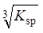 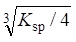
(C) s = 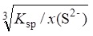 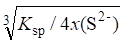
1024
在一定酸度和一定浓度C2O42-存在下, CaC2O4的溶解度计算式为------------------( )
(A) s = 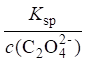 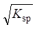
(C) s = 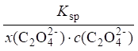 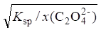
1025
移取饱和Ca(OH)2溶液50.00mL,用0.05000mol/L HCl标准溶液滴定,终点时, 耗去20.00mL,由此得Ca(OH)2沉淀的Ksp为-----------------------------------------------------------( )
(A) 1.6×10-5 (B) 8.0×10-6 (C) 2.0×10-6 (D) 4.0×10-6
1026
微溶化合物A2B3在溶液中的解离平衡是: A2B3==2A + 3B。今已测得B的浓度为3.0×10-3mol/L,则该微溶化合物的溶度积Ksp是---------------------------------------------------( )
(A) 1.1×10-13 (B) 2.4×10-13 (C) 1.0×10-14 (C) 2.6×10-11
1027
下列沉淀若不考虑其它副反应,试写出它们的溶度积Ksp与它们的溶解度(s)的关系式：
|
沉淀 |
Ksp |
|
PbCrO4 |
|
|
Pb(IO3)2 |
|
|
PbClF |
|
|
Pb3(AsO4)2 |
|
1028 比较下列各组物质溶解度的大小(用 >, < ,=符号表式)。
(1) AgCl(在纯水中) ______ AgCl(在0.1 mol/L NH4Cl中)
(2) AgCl(在2mol/L NaCl中) ______ AgCl(在纯水中)
(3) AgCl(在0.01 mol/L NaCl中) ______ AgCl(在2 mol/L HCl中)
(4) Ag2CrO4(在纯水中) ______ AgCl(在纯水中)
(5) Ag2CrO4(在0.001mol/L AgNO3中) ______ Ag2CrO4(在0.001mol/L K2CrO4中)
[Ksp(Ag2CrO4)=2.0×10-12, Ksp(AgCl)=1.8×10-10, Ag+与Cl-生成络合物, lgb1=3.0, lgb2=5.0]
1029
计算CdCO3在纯水中的溶解度。
[pKsp(CdCO3)=11.28,Cd2+基本不形成羟基络合物, H2CO3的pKa1= 6.38, pKa2= 10.25]
1030
由实验测得PbSO4在pH 2.00时的溶解度为2.0×10-4mol/L,计算PbSO4的Ksp。 [pKa2(H2SO4) = 2.0]
1031
计算CaF2在pH=1.00, cF = 0.10 mol/L时的溶解度。 [pKsp(CaF2)= 10.57, pKa(HF)=3.18]
1032
将100mL溶液中的Ca2+沉淀为CaC2O4・H2O,达到平衡时溶液中剩下的钙不得超过0.80mg。用HAc-NaAc缓冲溶液调节溶液pH为4.70, 此时溶液中草酸的总浓度必须达到多大?
[Ksp(CaC2O4) = 2.0×10-9; pKa1(H2C2O4) =1.22, pKa2(H2C2O4) = 4.19, Mr(Ca) = 40.08]
1033
计算pH=8.00、c(NH3)=0.2mol/L时MgNH4PO4的溶解度。
[pKsp(MgNH4PO4)=12.7,pKa(NH4+)=9.26, H3PO4的pKa1~pKa3分别是2.12、7.20、12.36]
1034
计算CaC2O4在pH为5.00的0.050mol/L(NH4)2C2O4中的溶解度。
[Ksp(CaC2O4)=2.0×10-9, H2C2O4的Ka1=5.9×10-2, Ka2=6.4×10-5]
1035
Ag+能与Cl-生成AgCl、AgCl2-络合物,计算[Cl-]=0.10mol/L时AgCl沉淀的溶解度。[已知Ag+与Cl-络合物的b1=1.1×103、b2=1.1×105, Ksp(AgCl)=1.8×10-10]
1036
计算AgCl沉淀在pH=8.00,络合剂L的总浓度c(L)=0.10mol/L溶液中的溶解度。(忽略在形成络合物时L的消耗) [已知Ka(HL)=1.0×10-10 , AgL2的lgb1=3.0、lgb2=7.0, Ksp(AgCl)=1.8×10-10]
1037
在pH=2.0的含有0.01 mol/L EDTA及0.10 mol/L HF的溶液中,当加入CaCl2使溶液中的c(Ca2+)=0.10 mol/L时,问(1)EDTA的存在对生成CaF2沉淀有无影响? (2)能否产生CaF2沉淀?(不考虑体积变化)
[HF的Ka=6.6×10-4, Ksp(CaF2)=2.7×10-11, lg K(CaY)=10.69 , lgaY(H)=13.51]
1038
在100mL NH3-NH4Cl缓冲溶液(pH9.7,[NH3]=0.2mol/L)中,最多能溶解多少克Ag2S?
[已知pKsp(Ag2S) = 48.7 ; pKa1(H2S) = 6.88、pKa2(H2S)= 14.15,银氨络合物的lgb1= 3.24、 lgb2= 7.05, Mr(Ag2S)=248,不考虑Ag+的水解]
1039
计算氢氧化铜沉淀在含有0.10 mol/L游离NH3溶液中的溶解度。
{已知Ksp[Cu(OH)2]=10-18.6,Cu(OH)+络合物的lgK=6.0, 铜氨络合物的lgb1~lgb5分别为4.3、8.0、11.0、13.3、12.9, Kb(NH3)=10-4.74}
1040
计算ZnS在0.10mol/L Na2C2O4溶液中的溶解度。[已知Ksp(ZnS)=10-21.7, H2C2O4的Ka1= 10-1.2, Ka2=10-4.2; Zn(C2O4)34-络合物的lgb1~ lgb3分别为4.9、7.6、8.2, H2S的Ka1=10-6.9 , Ka2= 10-14.2]
1041
计算ZnS在pH=10.0的氨性溶液中的溶解度,溶解达到平衡时,溶液中 [NH3]=0.10mol/L [pKsp(ZnS)=21.7, Zn(NH3)42+的lgb1~lgb4为2.27、 4.61、7.01、9.06; pKa1(H2S)=6.88, pKa2(H2S)=14.15;pH=10.0时, lgaZn(OH)=2.4]
1042
如向含有Ba2+的溶液中加入EDTA及过量的硫酸盐,使其分析浓度分别为: c(Ba2+) = 0.10mol/L,c(Y) = 0.11mol/L,c(SO42-)=1.0×10-4mol/L,若欲阻止BaSO4 沉淀, 试问溶液的pH应大于多少? [已知Ksp(BaSO4)=1.1×10-10; lgK(BaY)=7.8] lgaY(H)~ pH关系如下:
|
pH |
8 |
8.5 |
9.0 |
9.5 |
10 |
|
lgaY(H) |
2.3 |
1.8 |
1.4 |
0.8 |
0.5 |
1043
计算BaSO4在pH=10.0,含有0.010 mol/L EDTA和0.10 mol/L Na2SO4溶液中的溶解度。[Ksp(BaSO4)=1.1×10-10, K(BaY)=107.86, pH=10.0时, lgaY(H)=0.45]
1044
为了回收银,向含银废液中加入过量的食盐,蒸干得到150g沉淀物。经测定其中含有3.9%NaCl及9.6%AgCl,现欲用1 L氨水将沉淀中的AgCl全部溶解,问氨水最低浓度应为多少？
[生成Ag(NH3)2+] [已知AgCl的Ksp=1.8×10-10, Ag(NH3)2+的lgb1=3.3、lgb2=7.2, Mr(NaCl)=58.44, Mr(AgCl)=143.3]
1045
将15mmol氯化银沉淀置于500mL氨水中,已知氨水平衡时的浓度为0.50mol/L, 计算溶液中游离的Ag+离子浓度。 [已知Ag+与NH3络合物的b1=103.24、b2=107.05, Ksp(AgCl)=1.8×10-10]
1046
为了在含有0.010 mol/L AgNO3 和 0.010 mol/L NaCl 的混合溶液中不生成AgCl沉淀, 计算: 1)混合溶液中所需游离NH3的最低浓度; 2)混合溶液中所需NH3的最低总浓度。
[AgCl的Ksp=2.0×10-10; Ag+-NH3络合物的b2=1.0×107, b1忽略不计]
1047
在重量分析中,待测物质中含的杂质与待测物的离子半径相近,在沉淀过程中往往形成--------------( )
(A) 混晶 (B) 吸留 (C) 包藏 (D) 后沉淀
1048
在重量分析中对无定形沉淀洗涤时,洗涤液应选择----------------------------------------( )
(A) 冷水 (B) 热的电解质稀溶液
(C) 沉淀剂稀溶液 (D) 有机溶剂
1049
下列说法中违背非晶形沉淀条件的是-------------------------------------------------------( )
(A) 沉淀应在热溶液中进行 (B) 沉淀应在浓的溶液中进行
(C) 沉淀应在不断搅拌下迅速加入沉淀剂 (D) 沉淀应放置过夜使沉淀陈化
1050
若BaCl2中含有NaCl、KCl、CaCl2等杂质,用H2SO4沉淀Ba2+时,生成的BaSO4最易吸附何种离子?---------------------------------------------------------------------------------------------( )
(A) Na+ (B) K+ (C) Ca2+ (D) H+
1051
用洗涤的方法能有效地提高沉淀纯度的是--------------------------------------------------( )
(A) 混晶共沉淀 (B) 吸附共沉淀 (C) 包藏共沉淀 (D) 后沉淀
1052
今在铵盐存在下,利用氨水作为沉淀剂沉淀Fe3+,若铵盐浓度固定,增大氨的浓度, Fe(OH)3沉淀对Ca2+、Mg2+、Zn2+、Ni2+等四种离子的吸附量将是-----------------------------------( )
(A) 四种离子都增加 (C) Ca2+、Mg2+增加而Zn2+、Ni2+减少
(B) 四种离子都减少 (D) Zn2+、Ni2+增加而Ca2+、Mg2+减少
1053
用(NH4)2C2O4沉淀Ca2+时,若试液中含有Mg2+,为了提高CaC2O4沉淀的纯度应采取的措施是-------------------------------------------------------------------------------------------------------( )
(A) 在加热的情况下,慢慢滴加稀(NH4)2C2O4 (B) 采用均匀沉淀法,并延长陈化时间
(C) 缩短陈化时间,并再沉淀一次 (D) 沉淀时加强搅拌,并增加洗涤次数
1054
下列表述中错误的是-----------------------------------------------------------------------------( )
(A) 由于无定形沉淀颗粒小,为防止沉淀穿滤,应选用致密滤纸(慢速)
(B) 微溶化合物的临界值(Q/S)愈大,则愈不容易均相成核
(C) 相对过饱和度愈大,分散度愈高
(D) 均相成核作用是指构晶离子自发形成晶核
1055
用重量法以AgCl形式测定Cl-是在120℃干燥称重的,这时应当采用的洗涤液是--( )
(A) 稀NH4NO3溶液 (B) 稀HCl溶液 (C) 纯水 (D) 稀HNO3溶液
1056
用挥发法测定某试样的吸湿水时,结果偏高,可能是由于---------------------------------( )
(A) 加热的温度过低 (B) 加热时间不足
(C) 试样加热后没有冷到室温就称量 (D) 加热后的称量时间过长
1057
用BaSO4重量法测定Ba2+含量,若结果偏低,可能是由于--------------------------------( )
(A) 沉淀中含有Fe3+等杂质 (B) 沉淀中包藏了BaCl2
(C) 沉淀剂H2SO4在灼烧时挥发 (D) 沉淀灼烧的时间不足
1058
以氨水沉淀Fe3+时,溶液中含有Ca2+、Zn2+,当固定NH4+浓度,增大NH3浓度时___________的吸附量减小,_______________的吸附量增大。
1059
在含有Ca2+和H2C2O4的酸性溶液中,加入尿素CO(NH2)2并加热,能析出较大颗粒的CaC2O4沉淀。尿素发生的反应是___________________________________。得到较大颗粒CaC2O4的原因是_________________________________________。
1060
指出与下述情景相应的试剂(填A,B,C)
(1) 在热溶液中水解 ___________
|
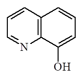 |
(2) 选择性试剂 ___________
(3) 金属沉淀剂,但不具专属性 ___________
A. 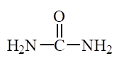 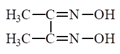
1061
无定形沉淀在沉淀完毕之后要加水稀释,其作用是_____________________。
1062
用沉淀重量法测定煤粉中硫含量,请填写条件。
|
测定前处理 |
沉淀条件及酸碱性 |
滤纸的选择 |
|
|
|
|
|
沉淀剂 |
洗涤剂及洗涤检查 |
换算因数 |
|
|
|
|
1063
重量法测定铁,称量形式为Fe2O3,若灼烧所生成的Fe2O3中含有少量的Fe3O4, 则将使测定结果(Fe的质量分数)偏______,这是因为_________________________________ _________________________________________________________。 [Ar(Fe)=55.85 , Ar(O)=16.00]
1064
用BaSO4重量法测定Na2SO4试剂纯度时,若沉淀吸留(包藏)了Na2SO4, 测定结果___________, 若吸留了NH4Cl则结果___________。(填偏高、偏低或无影响)
1065
采用BaSO4重量法测定BaCl2纯度时,若沉淀中包藏了H2SO4,其结果_______; 若包藏了BaCl2其结果______________。若是以此法测定Na2SO4纯度,沉淀中包藏了Na2SO4, 其结果________________;若包藏了BaCl2,则结果_____________。 (指偏高、偏低或无影响)
1066
BaSO4法测定钡的含量,下述情况使测定结果偏高或偏低,还是无影响 ?
(1) 沉淀中包藏了BaCl2 __________________
(2) 灼烧过程中部分BaSO4被还原为BaS __________________
1067
硫酸钡法测定钡的含量,下列情况使测定结果偏高或偏低还是无影响?
(1) 沉淀带下了沉淀剂H2SO4 ___________________
(2) 试液中NO3-被共沉淀 ___________________
(3) 试液中Fe3+被共沉淀 ___________________
1068
莫尔法测定Cl-含量时,要求介质的pH在6.5~10范围内,若酸度过高则---------------( )
(A) AgCl沉淀不完全 (B) AgCl吸附Cl-增强
(C) Ag2CrO4沉淀不易形成 (D) AgCl沉淀易胶溶
1069
以某吸附指示剂(pKa=5.0)作银量法的指示剂,测定的pH应控制在--------------------( )
(A) pH<5.0 (B) pH>5.0 (C) 5<pH<10.0 (D) pH>10.0
1070
用沉淀滴定法测定银,下列方式中适宜的是------------------------------------------------( )
(A) 莫尔法直接滴定 (B) 莫尔法间接滴定
(C) 佛尔哈德法直接滴定 (D) 佛尔哈德法间接滴定
1071
下列试样中的氯在不另加试剂的情况下,可用莫尔法直接测定的是------------------( )
(A) FeCl3 (B) BaCl2 (C) NaCl+Na2S (D) NaCl+Na2SO4
1072
根据下表所给数据推断用AgNO3滴定NaCl时表中各点的pAg。
|
|
pAg |
||
|
浓度 |
化学计量点前0.1% |
化学计量点 |
化学计量点后0.1% |
|
0.1mol/L |
5.20 |
4.75 |
4.30 |
|
1mol/L |
|
|
|
1073
根据下表所给数据推断pAg (浓度均为0.1 mol/L)。
|
|
pAg |
||
|
体系 |
化学计量点前0.1% |
化学计量点 |
化学计量点后0.1% |
|
AgNO3滴定NaCl |
5.20 |
4.75 |
4.30 |
|
AgNO3滴定NaI |
|
7.92 |
|
1074
用佛尔哈德法测定Cl-时,若不采用加硝基苯等方法,分析结果___________;
法扬司法滴定Cl-时,用曙红作指示剂,分析结果______________________。 (指偏高还是偏低)
1075
指出下列试剂的作用(填A、 B、 C、 D)。
(1) 硝基苯 __________ A. 佛尔哈德法所需试剂
(2) 荧光黄 _________ B. 用于法扬司法
(3) Fe(NH4)(SO4)2 ________ C. 用于莫尔法
(4) K2CrO4 _________ D. 用于改进佛尔哈德法
1076
指出以下银量法所用指示剂及适用酸度:
|
方法 |
莫尔法 |
佛尔哈德法 |
|
指示剂 |
|
|
|
适用酸度 |
|
|
1077
设计一分析方案测定银焊条中Ag的含量:
|
溶剂 |
滴定剂 |
滴定酸度 |
指示剂及颜色变化 |
|
|
|
|
|
1078
设计HCl-HAc溶液中HCl含量测定方案:
|
滴定剂 |
滴定条件及如何达到 |
指示剂及颜色变化 |
|
|
|
|
1079
有一由碱金属氯化物和铬酸盐所组成的混合物,填表说明如何测定其中的氯化物:
|
方法名称 |
滴定方式 |
所用标准溶液 |
指示剂 |
酸碱度 |
|
|
|
|
|
|
1080
设计测定Na2S-NaCl混合液中的NaCl浓度的方案:
|
标准溶液 及滴定方式 |
必须预处理 及滴定条件 |
指示剂及 颜色变化 |
计量关系 nNaCl : n滴定剂 |
|
|
|
|
|
1081
设计用银量法测定BaCl2・2H2O试剂纯度的方案:
|
标准溶液 |
必要试剂 |
酸度 |
指示剂 |
质量分数计算式 |
|
|
|
|
|
|
1082
称取含砷农药0.2000g溶于HNO3,转化为H3AsO4,调至中性,沉淀为Ag3AsO4,沉淀经过滤洗涤后溶于HNO3,以Fe3+为指示剂滴定,耗去0.1180 mol/L NH4SCN标准溶液33.85mL,计算农药中As2O3质量分数。 [Mr(As2O3)=197.8]
1083 称取一纯盐KIOx 0.500g,经还原为碘化物后,用0.1000mol/L AgNO3滴定,计用去23.36mL,求该盐化学式。 [Ar(K)=39.10, Ar(I)=126.9]
1084
今称取含有KBr、KBrO3及惰性物试样1.000g,溶解定容于100mL容量瓶。移取25.00mL,在H2SO4介质中以Na2SO3还原BrO3-为Br-,然后去除SO32-, 调至中性滴定, 耗去0.1010mol/L AgNO3 10.51 mL。另取25.00mL试液,用H2SO4酸化后加热赶去Br2,再调至中性, 滴定剩余Br-耗去上述AgNO3 3.25 mL。计算试样中KBr 及 KBrO3的质量分数。 [Mr(KBr)=119.0, Mr(KBrO3)=167.0]
3001
重量分析法对沉淀的要求是__________________________________________________ ___________________________。
3002
重量分析法对称量形式的要求是________________________________________ _____ _________________________________。
3003
重量法测定铝时,称量形式可以是Al2O3(Mr=101.96),也可以是Al(C9H6NO)3(Mr=495.4),试样中铝含量小时采用________________称量形式测定结果的准确度高,如果在操作过程中称量形式均损失1mg,则铝的损失量分别为___________和____________。 [Mr(Al)=26.98]
3004
有一含B2-约10%的试样,采用重量法将B2-沉淀为A2B形式。已知物质A的质量是物质B质量的两倍,若使称量沉淀的相对误差小于0.1%,天平称量绝对误差为0.2mg,计算最少应称取试样多少克?
3005
有一煤试样,含硫约6%,现将硫转化为BaSO4,以重量法测定硫的含量。已知称取试样1.5g,沉淀时需过量沉淀剂50%。计算需加入1mol/L BaCl2共多少毫升? [Ar(S)=32.06]
3006
有一含硫20%的黄铁矿,用BaSO4重量法测定该矿中硫的含量时,若要求生成干燥的BaSO4质量不少于0.5g,应至少称取黄铁矿多少克? [Ar(S)=32.06, Mr(BaSO4)=233.4]
3007
分析硅酸盐中的铁含量时,为使称量形式Fe2O3 的质量即为试样中Fe 的质量分数,应准确称取试样 g。 [Mr(Fe2O3)=159.7, Ar(Fe)=55.85]
3008
今分析两种铅矿试样,在第一个试样中测得含水1.56%,含Pb 24.02%;第二个试样中测得含水0.58%,含Pb 24.26%。计算这两种干燥试样中铅的质量分数。
3009
有一只含AgCl和AgBr的混合物,质量为1.000g, 经测定其中含有银0.6635g。试计算混合物中溴和氯的质量分数各为多少? [Mr(AgCl)=143.32, Mr(AgBr)=187.77, Ar(Cl)=35.45, Ar(Br)=79.90, Ar(Ag)=107.87]
3010
有一只含AgCl和AgBr混合物,测得其Ag的质量分数为65.67%,试求氯和溴的质量比[m(Cl):m(Br)]为多少? [Mr(AgCl)=143.32, Mr(AgBr)=187.77, Ar(Cl)=35.45, Ar(Br)=79.90, Ar(Ag)=107.87]
3011
用重量法标定20.00mL HCl溶液,得到0.3000g干燥的AgCl (Mr=143.32)沉淀, 计算HCl溶液的浓度(mol/L)。
3012
称取含NaCl和NaBr及惰性物的混合试样0.6000g,采用重量法测定, 得到干燥的银盐总沉淀量为0.4482g。另取同样量的试样,采用银量法测定,消耗0.1048mol/L AgNO3溶液26.48mL,计算NaCl和NaBr的质量分数。 [Mr(NaCl)=58.44, Mr(NaBr)=102.9, Mr(AgCl)=143.32, Mr(AgBr)=187.78]
3013
有一铁矿试样,测得含水0.84%, 铁的质量分数为52.69%。则干试样中铁的质量分数为 _________。
3014
请将湿煤的数据换算成干燥的煤的数据:
试样 水分 灰分 硫 挥发物
湿样 2.85% 8.73% 1.37% 19.17%
干样 /
3015
有一煤试样,测定含水为2.88%,灰分为6.32%。计算干试样中灰分的质量分数。
3016
下列试剂能使BaSO4沉淀的溶解度增加的是-----------------------------------------------( )
(A)浓HCl (B)1mol/L NaOH (C)1mol/L Na2SO4 (D)1mol/L NH3・H2O
3017
测定银时为了保证使AgCl沉淀完全,应采取的沉淀条件是------------------------------( )
(A)加入浓HCl (B)加入饱和的NaCl
(C)加入适当过量的稀HCl (D)在冷却条件下加入NH4Cl+NH3
3018
按重量分析误差的要求,沉淀在溶液中溶解损失量应≤________mg。
3018
按重量分析误差的要求,沉淀在溶液中溶解损失量应≤________mg。
3019
实验证明,在较低浓度Na2SO4存在下, PbSO4 的溶解度降低, 但当Na2SO4的浓度 c≥0.2mol/L时, PbSO4的溶解度却增大,这是因为_______________________________ ________________________________。
3020
在浓HCl 存在下,可使AgCl沉淀的溶解度____,这是因为________________________ ______________。
3021
有一微溶化合物MA,在一定酸度下,阴离子A有酸效应,计算其溶解度的公式为 _________________________。
3022
有一微溶化合物MmAn,在一定酸度下,在某溶剂中阳离子M 和阴离子A均发生副反应,计算其溶解度的公式为_______________________。
3023
有一微溶化合物A2B3, 其Ksp=1.1×10-13,则B的浓度为_______________mol/L, A的浓度为____________________mol/L。
3025
计算CuS在纯水中的溶解度。 [pKsp(CuS)=35.2, pKa1(H2S)=7.1, pKa2(H2S)=12.9]
3026
有一石灰石试样含CaCO3 约60%,称取试样0.25g, 溶解并调节溶液的pH后,加入(NH4)2C2O4,使沉淀为CaC2O4后进行重量法测定。为了使洗涤时造成溶解损失的误差≤0.01%, 应该用100mL多大浓度的(NH4)2C2O4作洗涤液? [CaC2O4的Ksp=2.3×10-9, Mr(CaCO3)=100, Mr[(NH4)2C2O4]=124]。
3027
Ca(OH)2的溶度积为5.5×10-6,计算其饱和水溶液的pH。
3028
0.001mol/L Ca(NO3)2与0.001mol/L (NH4)2C2O4等体积混合,在pH=1.0时,是否有沉淀产生？ [pKsp(CaC2O4)=8.64, pKa1(H2C2O4)=1.22,pKa2(H2C2O4)=4.19]
3029
比较CaC2O4在pH=8.0和在纯水中的溶解度。
[pKsp(CaC2O4)=8.64, pKa1(H2C2O4)=1.25, pKa2(H2C2O4)=4.29]
3030
计算AgCl沉淀在[Cl-]=0.10mol/L和[Cl-]=1.0mol/L溶液中的溶解度。
[Ksp(AgCl)=1. 8×10-10, Ag+-Cl-络合物的b1=1.1×103, b2=1.1×105]
3031
试计算BaSO4在纯水中和在pH=3.0,EDTA浓度为1.0×10-2mol/L条件下的溶解度, 比较它们之间有无差异,为什么? [lgK(BaY)=7.8；pH=3.0时, lgaY(H)=10.8, pKsp(BaSO4) = 9.97]
3032
在含有EDTA的中性溶液中,BaSO4沉淀的溶解度比在纯水中有所增大, 这是由于______________________________________________________________。
3033
含有Ca2+、Zn2+、Fe2+混合离子的弱酸性试液,若以Fe(OH)3形式分离Fe3+, 应选择的试剂是-------( )
(A)浓NH3水 (B)稀NH3水 (C)NH4Cl+NH3 (D)NaOH
3034
有一黄铁矿试样,分解处理试样后,溶液中主要含有Fe3+和SO42-,如果采用沉淀为Fe(OH)3和BaSO4的重量法分别测定铁和硫的含量,通常都是先沉淀分离Fe(OH)3后再沉淀BaSO4。在弱酸性溶液中沉淀Fe(OH)3应选的试剂是-------------------------------------------------( )
(A)NaOH (B)浓NH3・H2O (C)NH4Cl+NH3 (D)稀NH3・H2O
3035
采用BaSO4重量法测定Ba2+时,洗涤沉淀用的适宜洗涤剂是------------------------( )
(A)稀H2SO4 (B)稀NH4Cl (C)冷水 (D)乙醇
3036
按沉淀的颗粒大小和外部形状,通常将沉淀分为三类,它们是________________ _____________________________。AgCl是属于_________, MgNH4PO4属于__________, Al(OH)3属于__________沉淀。
3037
共沉淀现象是指____________________________________________________________ _____________________________________________________________。
3038
后沉淀现象是指____________________________________________________________ ____________________________________________________________。
3039
吸留共沉淀与表面吸附共沉淀的主要区别在于____________________________ _______________;吸留与包夹的主要区别在于____________________________________。
3040
形成混晶共沉淀的主要条件是____________________________, 常用来进行定性鉴定的混晶体系是__________________________________。
3041
用过量BaCl2沉淀SO42-时,溶液中含有少量NO3-、Ac-、Zn2+、Mg2+、Fe3+等杂质,当沉淀完全后,扩散层中优先吸附的离子是 ,这是因为 。
3042 (Ⅰ)试液中含有SO42-,(Ⅱ)试液中含有Ba2+。欲用BaSO4重量法测定其含量,已知两种试液中均含有H+、Mg2+、K+、Na+、NO3-杂质。则(Ⅰ)试液中扩散层优先吸附的离子是______;(Ⅱ)试液扩散层优先吸附的离子是____。
3043
采用BaSO4重量法时,下列各种情况对分析结果产生什么影响? [正误差(+),负误差(-),无影响(0)]
|
有Na2SO4共沉淀 |
有H2SO4共沉淀 |
||
|
测定S |
测定Ba2+ |
测定S |
测定Ba2+ |
|
|
|
|
|
3044
获得晶型沉淀控制的主要条件是_____________________________________________ _____________________________________________________。
3045
陈化过程是______________________________________, 它的作用是_______________ _____________________________________________。
3046
无定型沉淀的主要沉淀条件是_______________________________________________ _____________________________________________。
3047
均匀沉淀法是指____________________________________________________________ _________________________________________________________。其优点是__________ _____________________________。
3048
为获得大颗粒的晶形沉淀,沉淀条件中最关键的一点是溶液的浓度要稀,加入沉淀剂时要慢加快搅,防止局部过浓。试以冯・韦曼(Von.Weimarn)提出的经验公式予以解释。
3049
无定形沉淀的条件之一是在浓溶液中进行,这必然使吸附杂质量增多,为克服这个缺点,在实验中采取的措施是什么?
3050
当用冷水洗涤AgCl沉淀时,为什么会产生胶溶现象?应当选用什么洗涤液?
3051
今有两份试液,采用BaSO4重量法测定SO42-,由于沉淀剂的浓度相差10倍,沉淀剂浓度大的那一份沉淀在过滤时穿透了滤纸,为什么?
3052
什么叫均相成核?溶液的相对过饱和度较大时,对生成晶体的颗粒大小有何影响, 为什么?
3053
均匀沉淀法有哪些优点?试举两实例说明之(用反应式表明沉淀过程)。
3054
按下述各项要求填写空格:
|
银量法包括 |
|
|
|
|
滴 定 剂 |
|
|
|
|
指 示 剂 |
|
|
|
3055
以莫尔法测定Cl-的含量时,滴定剂是________,指示剂是_______,应控制的pH 范围是________,若有NH4+存在,应控制的pH范围是________。
3056
有一NH4Cl试样,用莫尔法测定Cl-的含量时,应控制的pH范围是________,若pH为10,则使测定结果偏____,这是因为__________________________________。
3057
用莫尔法测定Cl-的含量时,酸度过高,将使___________________________,碱性太强,将生成_______________________________。
3058
BaCl2・2H2O中的Cl-不能用莫尔法测定,其原因是______________________。若欲消除这种干扰,可以加入___________________________________。
3059
佛尔哈德法测定Ag+时,滴定剂是________________,指示剂是_________, 应在____(酸性,中性,碱性)介质中,终点颜色改变是________________。
3060
佛尔哈德法测定Ag+时,应在________(酸性,中性),这是因为_______________ ____________________。
3061
用佛尔哈德法测定Cl-时,应采用________(指滴定方式);需加入________保护AgCl沉淀,否则,将发生的反应是_______________________________________, 会使测定结果偏___。
3062
用佛尔哈德法测定Cl-时,若不加入硝基苯,分析结果会偏__。若测定Br-,不加入硝基苯,对结果______。
3063
以法扬司法测定卤化物,确定终点的指示剂是属于__________,滴定时,溶液中的酸度与_______________有关。
3064
卤化银对卤化物和各种吸附指示剂的吸附能力如下: 二甲基二碘荧光黄>Br->曙红>Cl->荧光黄。如用法扬司法测定Br-时,应选________指示剂;若测定Cl-,应选______指示剂。
3065
某一天然水样中含有Cl-、CO32-、PO43-、SO42-等杂质,应采用__________方法测定Cl-的含量,这是因为_________________________________________。
3066
用莫尔法测定Cl-,如在化学计量点时生成Ag2CrO4沉淀,理论上计算需要[CrO42-]的浓度为1.2×10-2mol/L,如滴定总体积为100mL,需加入质量浓度为50g/L的K2CrO4指示剂多少毫升? [Mr(K2CrO4)=194.2]
3067
欲用莫尔法测定Ag+,其滴定方式与测定Cl-有无不同?为什么?
3068 能否用莫尔法直接滴定Ag+? 为什么?
3069 简要说明莫尔法测定Cl-的原理。
3070
用佛尔哈德法测定Cl-、Br-、I-时的条件是否一致,为什么?
3071
灼烧过的BaSO4沉淀重0.5013g,其中含有少量BaS,用H2SO4润湿,蒸发除去过量H2SO4后再灼烧,称得沉淀质量为0.5021g。求BaSO4沉淀中BaS的质量分数。 已知Ar(O)=16.00, Ar(S)=32.06, Ar(Ba)=137.3
3072
为使胶体凝聚(或防止胶体形成),在进行沉淀和洗涤时常使用________溶液。而为了保护胶体防止凝聚，可加入__________,这在______________________ 滴定法中有应用。
3073
以下银量法测定需采用返滴定方式的是-----------------------------------------------------( )
(A)莫尔法测Cl- (B)吸附指示剂法测Cl-
(C)佛尔哈德法测Cl- (D)AgNO3滴定CN-(生成Ag[Ag(CN)2]指示终点
3074
AgNO3滴定NaCl时,若浓度均增加10倍,则突跃pAg增加------------------------------( )
(A)1个单位 (B)2个单位 (C)10个单位 (D)不变化
3075
用Ag+滴定Cl-时,若浓度均增大10倍,化学计量点前0.1%pCl________;化学计量点pCl ________;化学计量点后0.1% pCl________。(指增大或减少多少单位)
5001
标定NH4SCN溶液应采用 标准溶液， 为指示剂。
5002
用莫尔法测定Cl-,控制pH=4.0, 其滴定终点将------------------------------------------- ( )
(A)不受影响 (B)提前到达
(C)推迟到达 (D)刚好等于化学计量点
5003
用佛尔哈法测定Ag+，滴定剂是------------------------------------------------------------- ( )
(A)NaCl (B)NaBr (C)NH4SCN (D)Na2S
5004
溶液中Ag(NH3)2+ 的浓度为0.1mol/L, [NH3]=1mol/L。当加入KI后，使I- 的浓度保持为[I-] = 0.1mol/L, 此条件下能否生成AgI沉淀? 若能沉淀，计算c (Ag)总。
Ksp(AgI)=9.3×10-17；Ag(NH3)2+ lgb2=7.05 AgI络离子lgb1＝6.58, lgb2=11.74, lgb3=13.68
5005
计算用200 mL纯水和用200 mL 0.01mol/L的草酸铵洗涤CaC2CO4沉淀时，沉淀的损失各为多少? [Ksp(CaC2O4)=2.3×10-9 , M r(CaC2O4)=128.1]
5006
今分析两种铅矿试样，两个干燥试样中铅的质量分数均为24.40%, 测得第一个湿试样中含Pb 24.02%, 第二个湿试样含Pb 24.26 % , 试计算两个湿试样中水的质量分数各是多少?
5007
0.2000 g氯代乙烷和溴代乙烷的混合物，经加碱水解后加入沉淀剂AgNO3，得到0.4023g沉淀，试计算混合物中两种化合物各自的质量分数为多少?
[Mr(氯代乙烷) =64.45， Mr(溴代乙烷)=108.9， Mr(AgCl)=143.32， Mr(AgBr)=187.77]
5008
晶核的形成过程有 与 两种。当溶液的过饱和度很低时，主要是 成核，将得到 颗粒沉淀。
5009
已知Ca(OH)2的Ksp= 4.00×10-6，取其饱和溶液50.00 mL, 需用0.0500 mol/L HCl多少毫升滴定至终点?
5010 有机沉淀剂有哪些特点?
5011 Fe(OH)3是属于 型沉淀，洗涤该沉淀应选用 。
5012
微溶化合物的固有溶解度是指 。
5013
微溶化合物BaSO4在200 mL纯水中损失为 mg；若加入过量BaCl2保持[Ba2+]＝0.01mol/L，其损失量为 mg。[Mr(BaSO4)=233 Ksp(BaSO4)=1.1×10-10]
5014
沉淀重量法中，称量形的摩尔质量越大，将使 ----------------------------------------- ( )
（A）沉淀易于过滤洗涤 (B) 沉淀纯净
(C) 沉淀的溶解度减小 (D) 测定结果准确度高
5015
有一煤试样，测定湿试样的灰分为5.88%，干试样的灰分为6.00%，求湿试样的含水量-----------------( )
(A)2.50% (B)3.00% (C)2.00% (D)3.50%
5016
有一铜矿试样，测定其含水量为1.00%，干试样中铜的质量分数为54.00%，湿试样中铜的质量分数为-----------------------------------------------------------------------------------------( )
(A)54.10% (B)53.46% (C)55.00% (D)53.00%
5017
有一化学纯的MgSO4×7H2O, 称取0.8000 g试样，将镁沉淀为MgNH4PO4，经灼烧为Mg2P2O7，得0.5000 g。求试样中MgSO4的质量分数?试样与分子式是否相符?失去几个结晶水? [Mr(Mg2P2O7)＝222.55，Mr(MgSO4×7H2O)=246.48, Mr(MgSO4)=120.4]
5018
根据下列分析结果推出该化合物含几个结晶水?
w(Na2SO4)=44.09% , w(H2O)=55.91% 。 [Mr(Na2SO4)=142.05 Mr(H2O)=18.00]
5019
重量法分析磷氧化合物时，得到如下结果：w(P)=43.6%, w(O)=56.4%, 试推算出化合物的分子式。[Ar(P)=30.97, Ar(O)=16.00]
5020
某有机药物经灰化后，用四苯硼酸钠法测定其中的K+。称取试样0.5000g，经处理，烘干至恒重，得四苯硼酸钾沉淀0.1834g, 求w(K)? ( Mr{K[B(C6H5)4]}=358.3, Ar(K)=39.10)
5021
葡萄糖的干燥失重测定。空称量瓶于105℃干燥至恒重，为20.0240 g，加入试样后重21.5885 g, 再于105℃干燥至恒重后，为21.4565g, 则葡萄糖干燥失重为 ％
5022
将酚酞分别加入MnS (a)的饱和水溶液；CuS(b)的饱和水溶液中 [已知：Ksp(MnS)=2×10-10；Ksp(CuS)=6×10-36; H2S: Ka1=1.3×10-7, Ka2=7.1×10-15]，所观察到的现象是：--( )
(A) a、b均无色
(B) a中无色，b中呈红色
(C) a中呈红色 b中无色
(D) a、b均呈红色
5023
在pH=9.0的NH3-NH4Cl缓冲溶液中([NH3]=0.10 mol/L)通入H2S至饱和(浓度约为0.10 mol/L)，求Ag2S在此溶液中的溶解度。[H2S: Ka1=1.3×10-7, Ka2=7.1×10-15; Ag+~NH3络合物lgb1, lgb2依次为3.4, 7.4; Ksp(Ag2S)=2×10-50 ]
5024
取尿样5.00 mL，加入0.0950 mol/L AgNO3溶液20.00 mL，过剩的AgNO3用0.1100 mol/L NH4SCN溶液滴定，用去8.00 mL。计算1.5 L尿液中含NaCl多少克? [Mr (NaCl)=58.44]
5025
有一含有NaCl和NaBr的试样，称取0.3750g,溶解后用AgNO3沉淀,测得NaCl质量分数为4.08%, NaBr为53.33%。若称取同样质量的试样，用0.1043 mol/L AgNO3滴定Cl-和Br-总量，需用AgNO3溶液多少? [Mr(NaCl)=58.44, Mr(NaBr)=102.9]
5026
莫尔法测定Cl- 采用滴定剂及滴定方式是--------------------------------------------------- ( )
(A) 用Hg2+盐直接滴定 (B)用AgNO3直接滴定
(C)用AgNO3沉淀后，返滴定 (D)用Pb2+盐沉淀后，返滴定
5027
5028 用BaSO4重量法测定煤中S的含量，洗涤沉淀的洗涤剂应选择--------------------- ( )
(A) 水
(B) 稀H2SO4
(C) 稀BaCl2
(D) H2O+NH4Cl
5029
将含有防高血压药物(C14H18Cl6N2, Mr=427)的试样2.89 g置于密封试管中加热分解，用水浸取游离出的氯化物，于水溶液中加入过量的AgNO3，得AgCl 0.187 g，假定该药物是氯化物的唯一来源，计算试样中C14H18Cl6N2的质量分数。[Ar(Cl)=35.45, Mr (AgCl)=143.32]
5030
欲使1mmol AgCl完全溶解，需3 mol/L NH3×H2O多少毫升? (忽略体积影响)
已知 Ksp(AgCl)=1.8×10-10 Ag(NH3)2的lgb2=7.05
5031
已知jq(Ag+/Ag)=0.799V, jq(Ag2CrO4/Ag)=0.446V。计算Ag2CrO4在纯水中的溶解度及Ag+的浓度